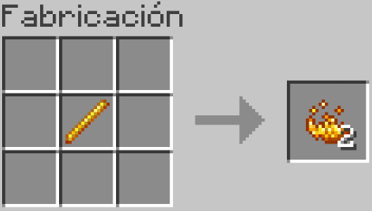
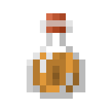

Description
Potion of Fire Resistance is a consumable item that provides temporary immunity to damage from lava and fire. This potion is extremely useful when exploring the Nether or working near lava in the Overworld. It allows the player to swim in lava, walk on magma blocks, and stay submerged in lava without taking any damage for the potion's duration.
Ingredients
To make Potion of Fire and Resistance, You will need:
-

Water Bottle
You will need empty glass bottles, which you can obtain by right-clicking on a water source or by using glass bottles in your crafting grid.
-

Redstone Dust
This is used to extend the duration of your potion.
-

Blaze Powder
Blaze Powder is used as a fuel for the brewing stand. You'll need one Blaze Powder for every brewing session. You can obtain Blaze Powder by crafting Blaze Rods in your crafting table.
-

Brewing Stand
You'll need a Brewing Stand to create and modify potions.
Steps
Follow the Following Steps to Make Mundane Potion:
-

Obtain Blaze Powder
Travel to the Nether and defeat Blazes to obtain Blaze Rods.
Craft Blaze Rods into Blaze Powder by placing them in the crafting grid. -

Create Water Bottle
To make water bottles, right-click on a water source (like a river or lake) with your empty glass bottles.
-

Create potion of Fire Resistance
Place the Blaze Powder in one of the brewing stand's fuel slots.
Put the Water Bottles in the brewing stand, and they will turn into Awkward Potions.
Finally, add Blaze Powder as the primary ingredient to create the Potion of Fire Resistance. -
Modify with Redstone
After creating the Potion of Fire Resistance, you can extend its duration by modifying it with Redstone Dust.
Place the Potion of Fire Resistance back into the brewing stand.
Add Redstone Dust to the brewing stand. This will extend the potion's duration, making it last longer.